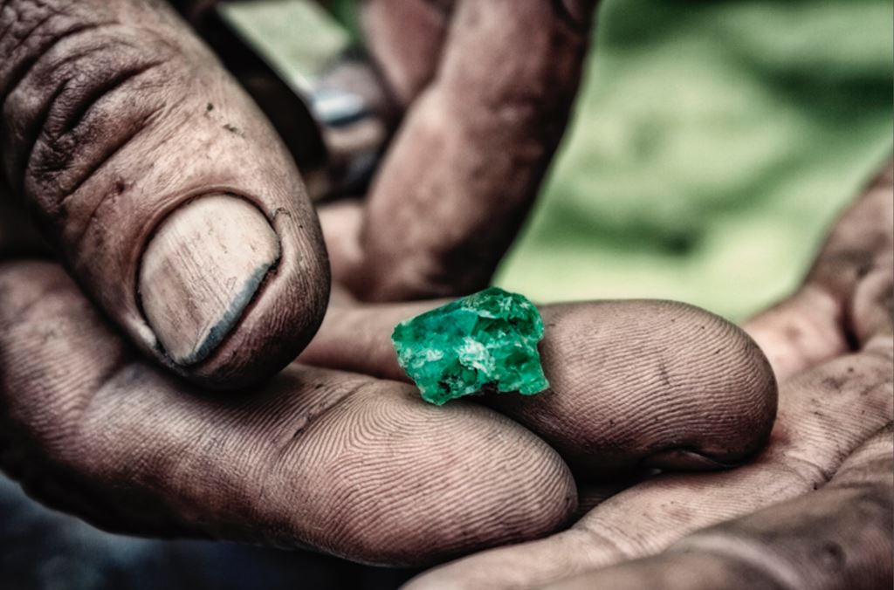
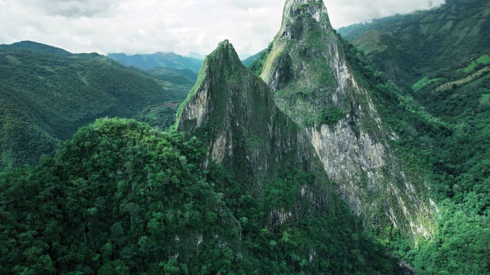

enero 9 2018, 11:54 pm
Turismo
TORRE DE LA IGLESIA
Esta torre es el único vestigio que queda de la antigua iglesia del pueblo que fue demolida en la década del noventa debido a fallas estructurales en la antigua edificación, en ella se puede observar.
noviembre 8 2017, 10:28 am
Turismo
MARAVILLOSOS PAISAJES CUAJADOS DE MITOS Y LEYENDAS, DE BOSQUES, LAGOS, RÍOS Y QUEBRADAS
Lepidóptero MORPHO CYPR Mariposas azul y negro de gran belleza En Colombia existe alrededor de unas 3019 especies de mariposas descritas hasta el momento, de las cuales 300 son endémicas (Andrade
noviembre 12 2017, 11:45 pm
Turismo
MINA DE ESMERALDA
Minas de Muzo
Explotadas desde hace muchos años antes del descubrimiento de América por los indios Muzos, se ubican en el cinturón esmeraldífero occidental en el departamento de Boyacá entre los
noviembre 9 2017, 11:20 pm
Turismo
Leyenda de Fura y Tena
Leyenda de Fura y TenaLa leyenda de Fura y Tena hace parte del patrimonio cultural de la zona de explotación de esmeraldas de Colombia y las dos montañas que los representan con 840 mt (Tena) y 500 mt